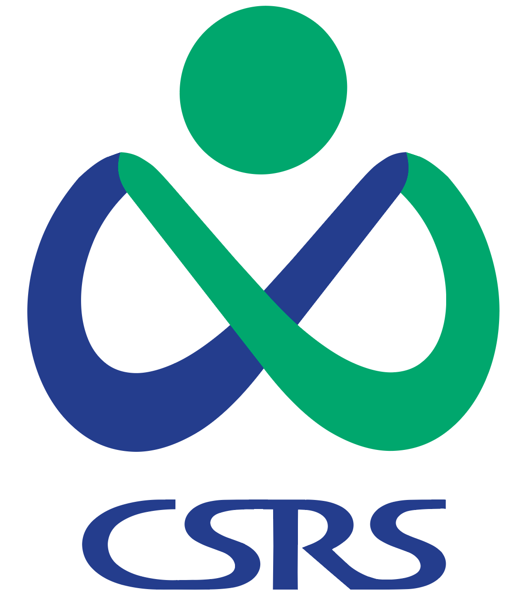
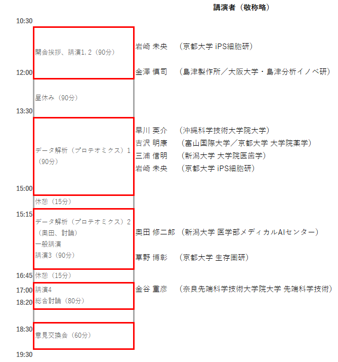

2022年（第7回）ワークショップ（ONLINE）を開催します
終了しました。ご参加・ご協力有り難うございました。
参加登録状況に鑑み、申込〆切を4月19日24時まで延長します。
4月18日から20日にかけて、当日の会場URLを順次送信しています。
この種のメールは自動でspam（迷惑メール）に誤分類されていることが多いので、メール未到着の場合、
念のためspamフォルダ内のチェックをお願いします。
20日中にメールが届いていない場合は、21日のできるだけ早い時間に研究会 (ms.bio.info@gmail.com) までご連絡ください。
一部の企業・地方自治体などのドメインの場合、厳しいセキュリティ設定によってメールサーバが受信を拒否している場合があります。この場合、メールを送信する方法がありませんので、プロバイダーのメールアドレスやフリーメールのアドレスなど、セキュリティのゆるい代替メールアドレスもご連絡ください。
本研究会7回目の、独自企画・一般公開ワークショップを、オンラインで開催します（参加に条件はありません）。
「質量分析が専門だが、インフォマティクスについては知らない研究者」
「質量分析を利用しており、インフォマティクスについては知らないが、必要を感
じている研究者」
「質量分析については何も知らないが、インフォマティクスには慣れているという研究者」
「とにかく分子生物学・生化学も質量分析も何も知らないが、情報学を専門にしている研究者」
「このような問題を抱えているが、一緒に研究できる人はいないか」
等々、分野・専門を問わず幅広いフィールドの人を歓迎します。（なお、基本的には研究者の方の参加を念頭に置いていますが、それ以外の方の参加も全く妨げるものではありません。）
また前回に引き続き、一般参加者の「ショート講演（口頭発表）」を募集します。詳細は下記をご覧ください。
このワークショップは、日本バイオインフォマティクス学会（JSBi）の（公募）研究会活動として開催されます。
なお、このページには順次、情報を追加していく予定です。
参加登録はこちら
ワークショップ開催概要
- ワークショップ名：
質量分析インフォマティクス研究会・第7回公開ワークショップ ONLINE（2022年） - 開催日時： 2022（令和4）年4月22日（金）午前10時開場～午後6時30分終了
-
開催場所：オンライン開催 （Zoom Webinarを使用予定）
※使用方法については、下記のURL送信メールに簡単な解説へのリンクを記載する予定です - 招待講演：（敬称略）
-
岩崎 未央 （京都大学 iPS細胞研究所）
『多能性維持に必要な転写後制御を受けた遺伝子群の同定』 -
金澤 慎司 （島津製作所／大阪大学・島津分析イノベーション協働研究所）
『熟練作業者に匹敵する自動ピークピッキング法の開発』 -
草野 博彰 （京都大学 生存圏研究所）
『生データの目視でメタボロミクスをするためのツールGrassHopperのご紹介』 -
金谷 重彦 （奈良先端科学技術大学院大学 先端科学技術研究科 情報科学領域）
『KNApSAcK Family DB：閉鎖まであと6年、それでも頑張るDB構築！』 データ解析セッション「プロテオミクスデータ解析」
（敬称略）
-
早川 英介 （沖縄科学技術大学院大学）
『プロテオミクスデータの素性と扱い方 -RAWから始まるデータ解析-』 -
吉沢 明康 （富山国際大学／京都大学 大学院薬学研究科）
『質量情報から配列情報へ－どこまで信頼できるのか』 -
三浦 信明 （新潟大学 大学院医歯学総合研究科）
『大規模データベースサーチの憂鬱 －メタプロテオミクス－』 -
岩崎 未央 （京都大学 iPS細胞研究所）
『2022年現状のプロテオーム定量解析手法 -single cell解析からbulk解析まで-』 -
奥田 修二郎 （新潟大学 医学部メディカルAIセンター）
『プロテオームデータの登録・公開』
-
早川 英介 （沖縄科学技術大学院大学）
- 参加費用： 無料
- 主催： 質量分析インフォマティクス研究会（日本バイオインフォマティクス学会 (JSBi)）
- 協賛： 理化学研究所 環境資源科学研究センター (CSRS) 
質量分析オミクスデータを深く読む
プログラム
 進行表・予稿集また一般講演（ショートトーク）も公募しています。（こちらを参照）（〆切りました）

一般演題（一般参加者によるショート口頭発表）募集
- 本ワークショップの開催の目的に沿って、参加者間でのより深い交流・情報交換を可能にするため、参加者による一般講演を募集します。
-
この一般講演は、通常の学会に於けるポスター発表と同様の位置づけを持つもので、1発表10分程度を予定しています。
「方法論・ソフトウェア・データベースなどを開発した」
といった話題のいずれでも差し支えありません。また、必ずしも研究発表である必要はなく、コミュニティへの要望や話題提供など、 独自研究以外の内容でも構いません。積極的なご応募をお待ちしています。
「質量分析データの情報学的研究を行った」
「現在の研究の問題点を打開するために情報学的研究が必要である」 - 応募には、下の参加登録フォームから登録の上、タイトル・著者・発表概要（MS Word形式またはPDF形式、400字程度）をms.bio.info@gmail.comまでメール添付で送ってください。
-
一般講演の申込〆切は4月3日（日）24時です。
-
発表要旨の送付は参加登録と同時である必要はありませんが、一般講演の申込〆切までには必ず送付してください。
なお、参加登録の〆切（4月15日）までに要旨の送付がなかった場合、一般講演の申し込みは自動的に無効とさせていただきます。
受け付け終了しました
意見交換会
-
今回のワークショップでも、（「参加者同士で交流を持ち、人脈を作る」効果については断念しますが）「講演や総合討論の内容について、参加者間で（自由に）意見を言う」点にフォーカスした意見交換会を、オンライン開催します。具体的には、
- ワークショップ本体終了後、そのまま同一ツール上で（予定ではZoom Webinarを用いて）議論を行う
- 総合討論と同様、座長が指名することで質問などが可能な形にする
- 総合討論ではフロアからパネリストに対して質問が行われ、パネリストが回答するが、意見交換会ではフロア（一般参加者）を含む議論を行う
- 今回も時間を原則として40分に制限しますが、総合討論がよりざっくばらんな形でフロアの中にまで拡大することを期待しております。
- なお飲食を伴いませんので、当然、参加費用はかかりません。
- ワークショップ本体が終了後、そのまま会議ツール（Zoom webinarを予定）内に残ることで参加が可能です（飲食を伴いませんので、事前申し込みは不要です）。
ワークショップ参加登録
- 参加ご希望の方は、以下の登録フォームから事前参加登録をお願いします。
- （一般演題への応募もここから登録して下さい）
- 2022年4月15日（金）24時を以て参加登録を〆切ります。参加登録〆切を4月19日（火）24時まで延長します。当日参加はできませんのでご注意ください。
-
申し込みに関連するお問い合わせなどは ms.bio.info@gmail.com にご連絡下さい。但し、22日ワークショップ当日は、世話人全員がワークショップ運営にかかり切りになるため、参加者以外の方のお問い合わせには対応できませんのでご了承下さい。
- なお、「登録完了」のメールはgoogle.comドメインのアドレスから送られます。24時間以内に返信が届かない場合は、spamに自動分類されていないことをご確認の上、ms.bio.info@gmail.comにご連絡ください。
申し込み受け付けを終了しました。
申し込みに関連するお問い合わせなどは ms.bio.info@gmail.com にご連絡下さい。但し、22日ワークショップ当日は、世話人全員がワークショップ運営にかかり切りになるため、参加者以外の方のお問い合わせには対応できませんのでご了承下さい。
Page Last Updated: Apr. 23, 2022